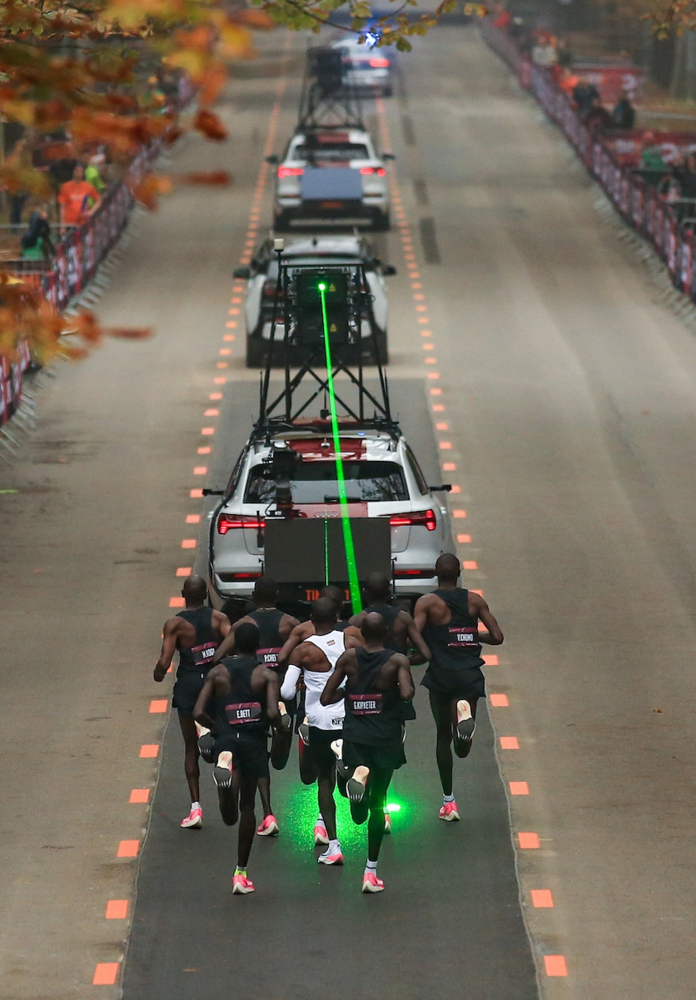

Weather
INEOS 1:59 Performance Team had weather forecasting equipment built, shipped, and installed on the course.
The sensors as well as modelling from historical data provided an understanding of what the
macro-scale conditions would
be. This setup allowed them to make three crucial decisions
in regards to travel, date, and time.
1. When Kipchoge should travel to Vienna. This required the team to identify a period of the right weather in advance of the event.
2. Pick the day for the event- must be made 72 hours in advance to allow and Kipchoge to enter his final tapering phase.
3. The Day before the event- inorder to identify the two-hour window for optimal conditions on the day.
Location

Vienna, Austria was the optimal location for this attempt because it offered a low altitude, mild climate, that was only one time
zone away from Kipchoges training camp of Kaptagat, Kenya. The one hour difference minimzed the disruption of jetlag,
sleeping habits, or eating patterns.
The tree lined course was a major factor
for its location because it substantially
mitigated the unpredicitiabilty of wind.
The Vehicle

The current versions of automobiles on the market are nowhere near accurate enough to maintain a steady
pace for Kipchoge. The car needed an accelerator resolution better than 0.1KPH accuracy.
For reference, If the pace car had run 0.1KPH too slow for the two hours, it would have taken two hours and 34.3secs to run
the marathon distance. A one second error over the two hours is only approximatley 0.0139% of the final time.

The pace had to run at a constant speed of 21.0975kph plus or minus 0.00293kph. INEOS turned to RML Group,
British high-performance automotive engineering company, to deliver that precision. They were able to produce a cruise control
vehicle 30 times more accurate than the best on the market. Pacing lasers were used to guide the runners.


 Anyone moving meets resistance from the air (drag) that must be pushed out of the way. It is the first person in the group meets
most restiance and must expend energy to overcome it.
Anyone moving meets resistance from the air (drag) that must be pushed out of the way. It is the first person in the group meets
most restiance and must expend energy to overcome it.